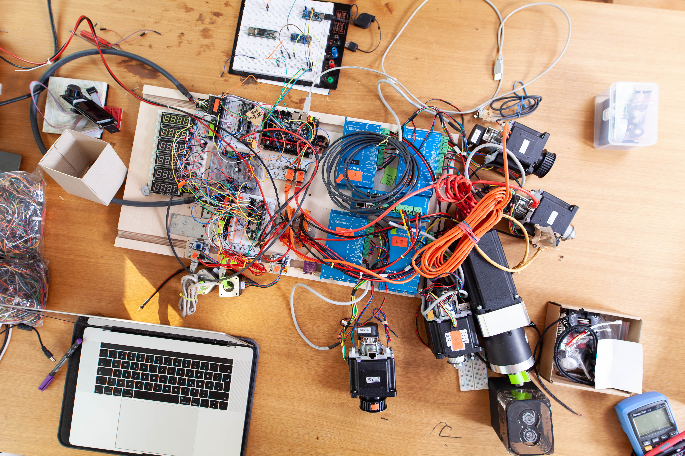

The HugeFancy 3D Printer
Das HugeFancy-Printer Projekt ist eine experimentelle Auseinandersetzung mit Großformatigem 3D-Druck.
Während 3D-Druck im kleinen Format bereits einzug in viele Industrien und Gestaltungsprozesse gefunden hat wollten wir mit dieser Projekt die Technologie auf einer neuen Skala erforschen: die menschliche Skala!

Digitale Fertigung, zu der auch der 3D-Druck gehört ermöglicht völlig neue Wege in der Gestaltung. Jedes gedruckte Objekt kann einzigartig sein ohne dass sich der Aufwand oder die Kosten erhöhen.
Wie können wir als Gestalter diese Möglichkeit Nutzen und Objekte schaffen, die unsere bisherige Beziehung zu Alltagsobjekten neu denken oder in Frage Stellen?
Bau des HugeFancy 3D-Printer


- 


Kontext Verortung Verantwortung
Das FDM-Druckverfahren nutzt Kunststoffe und bringt sie durch Aufschmelzen und präzises Aufeinanderschichten in dreidimensionale Formen. Thermoplastische Kunststoffe sind für dieses Verfahren geeignet wie kein anderes Material und lassen durch ihre Eigenschaften einen großen Gestaltungsspielraum und vielfältige nutzungsmöglichkeiten der Objekte zu. Jedoch sind Kunststoffe auf Erölbasis in vieler Hinsicht problematisch. Eine zentrale Frage unseres Projektes war deshalb wie wir mit diesem Material verantwortungsvoll umgehen können.


Erste Testdrucke
Eine wichtige Inspirationsquelle war dabei das Precious-Plastics Projekt, das von Dave Hakkens ins Leben gerufen wurde. Zwei Aspekte sind uns besonders wichtig: Auf der Materialebene möchten wir vor allem Recyclete Granulate nutzen und auch unsere Fehldrucke und Experimente in dem Materialkreislauf zurück führen.
Genau so wichtig wie der Umgang mit dem Material ist aber auch unsere Gestaltung der Druckobjekte. Plastik ist ein wertvolles Material und die Objekte die wir damit formen müssen der Lebenszeit und der in der Herstellung des Materials aufgewendeten Ernergie gerecht werden.
Hier setzen unsere ersten Experimente an:
Wie kann die Einzigartigkeit und Personalisierbarkeit der Druckobjekte unseren Umgang mit ihnen und unsere Wertschätzung verbessern? Können wir die flexibilität des 3D-Drucks nutzen um Gegenstände zu erschaffen die mehr sind als Gebrauchsgut und die durch verschiedene digitale Gestaltungsmethoden mehr sind als die in Massen gefertigten Objekte die uns umgeben?
Experimente
1. Algorithmic Chairs
2. Nicht die Hellste Leuchte
Ausblick
...